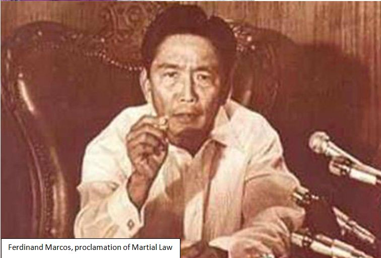

President Ferdinand E. Marcos signed Proclamation No. 1081 putting Philippines under the Martial Law.
The proclamation results in suspending civil rights and striking military authority in the Philippines.
A need in an extra power to end the rising wave of violent students’ demonstrators, the threats of the
new Communist Party of the Philippines (CPP), and the Muslim movement of the Moro National Liberation Front
(MNLF), was the justification of Ferdinand Marcos for the declaration of Martial Law as a need for the country.
The emergency proclamation also meant to destroy the roots of rebellion and advocate a quick trend for national development.
Martial Law is a calculated action to legally defend the Constitution and protect the comfort of the Filipino people
from the threatening ideas posed by Muslim rebel groups and Christian vigilantes that places national security at risk
during the time, Marcos explained citing the provisions from the Philippine Constitution.
Martial Law was not a military takeover but instead an option to resolve the country’s dilemma on rebellion that stages
national chaos menacing the peace and order of the country, Marcos cleared.
The declamation was to guide the country into what he called a “New Society”.
Preview of the late president’s speech of the Proclamation of Martial Law:
MY COUNTRYMEN, AS of the 21st of this month, I signed Proclamation No. 1081 placing the entire Philippines under martial law.
This proclamation was to be implemented upon my clearance and clearance was granted 9 o’clock in the evening of the 22nd, last night.
I have proclaimed martial law in accordance with the powers vested in the President by the Constitution of the Philippines. The
proclamation of martial law is not a military takeover. I, as your duly elected President of the Republic use this power which
may be implemented by the military authorities but still is a power embodied in the Constitution to protect the Republic of the
Philippines and our democracy. A republican, a democratic form of government is not helpless government. When it is imperilled by
the danger of violent overthrow, an insurrection or a rebellion, it has inherent and built-in powers wisely provided for under the Constitution.
Such a danger confronts the Republic of the Philippines. Article 7, Section 10, paragraph 2 of the Constitution provides and I quote:
“The President shall be Commander-in-Chief of all Armed Forces of Philippines and whenever it becomes necessary he may call out such armed
forces to prevent or suppress lawless violence, invasion, insurrection of rebellion. In case of invasion, insurrection or rebellion or
imminent danger thereof, when the public safety requires it, he may suspend the privileges of the writ of habeas corpus or place the Philippines
or any part thereof under law.”
Rest assured that I will continue to do so and I have prayed to God for guidance. Let us all continue to pray to Him. I am confident that with
God’s help, we will attain our dream of a reformed society, a new and brighter world.
Source: National Library of the Philippines
Marcos, F. E. (1978). Presidential speeches (Vol. 4). [Manila : Office of the President of the Philippines].

How it affected the Masses
The military or police can pick up anyone for any reason anytime at the time of the Martial law. You could
wind up a detainee, or you could just vanish, a "salvage" victim. You were labeled a "subversive" or a
"communist" or both, if you protested against the government and you were summarily arrested.
People the government didn't like were tailed by security elements, their telephones tapped. A student was
murdered for speaking up with Imee Marcos. No two words were more invoked and abused for the purposes of
oppression than "national security." People feared to speak out. The silence meant the people were happy, as
interpreted by Marcos logic, being what it was. Only Marcos and his cronies, who plundered the economy, were
protected by the law. Nobody else was.
The standards were Arbitrary arrest, detention, salvaging and torture. "We presume that priests and nuns
charged with subversive activities are guilty until the courts decide whether they are guilty or not.", the
Defense Minister, named Juan Ponce Enrile said in 1982. Chief Justice of the Supreme Court, Enrique Fernando,
servilely held an umbrella over Imelda Marcos' head, on one occasion.
The media were strictly controlled and most of the women who were journalists who wrote against the regime
were routinely "invited" for questioning by the military.
The Times Journal, the Daily Express and the Bulletin Today, were among the only three national broadsheets,
all of them offering the same pro-administration pap
How it affected the Country
Following the re-establishment of the Communist Party of the Philippines (CPP) in 1968, threat to the country’s
security was intensifying. In Tarlac and other parts of the country, The New People’s Army, supporters of CPP’s
military arm also grew in numbers.
A window for Marcos to declare Martial Law was when there was an alleged attempt to the life of then Minister of
Defense Juan Ponce Enrile. The day after the shooting incident, Marcos announced the emergency rule. Marcos
considered as a threat to national security the rebellion in the south caused by the clash between Muslims and
Christians. The Muslims were defending their ancestral land against the control of Christians who migrated in the area.
The minority group organized the Moro National Liberation Front (MNLF) in Malaysia and pushed for the autonomy of Mindanao
from the national government. Most Filipinos supported the move and was viewed by some critics as a change for the massive
corruption in the country to be solved.
To social and political values that hindered effective modernization, Marcos started to implement reforms on it. Marcos
imposed the need for self-sacrifice for the attainment of national welfare to match the accomplishments of its Asian
neighbors. His reforms targeted his rivals within the elite depriving them of their power and patronage but did not affect
their supporters.
Thirty-thousand opposition figures including Senator Benigno Aquino, journalists, student and labor activists were detained
at military compounds under the President’s command (Proclamation 1081 and Martial Law). The army and the Philippine
Constabulary seized weapons and disbanded private armies controlled by prominent politicians and other influential figures
(Proclamation 1081 and Martial Law). Marcos took control of the legislature and closed the Philippine Congress (Proclamation
1081 and Martial Law). Numerous media outfits were either closed down or operated under tight control (Proclamation 1081 and
Martial Law). Experts call this the “crony capitalism”, wherein Marcos allegedly funnelled millions of the country’s money
by placing some of his trusted supporters in strategic economic positions to channel resources to him.
Cause of its Demise
It was generally thought to have been the work of the military, responsible for the assassination of Benigno Aquino as he returned
to Manila in August 1983; it became the focal point of a more heavily supported opposition to Marcos’s rule.
Under mounting pressure both inside and outside the Philippines by late 1985, Marcos called a snap presidential election for February
1986. Benigno’s widow, Corazon C. Aquino became the candidate of a coalition of opposition parties. Strong public outcry over the election
results precipitated a revolt since Marcos was declared the official winner, which by the end of the month had driven Marcos from power.
The presidency was then assumed by Corazon Aquino.
In establishing the new government, Aquino’s great personal popularity and widespread international support were instrumental. She abolished
the constitution of 1973 and began ruling by decree, shortly after taking office. In February 1987, a new constitution was drafted and was ratified in a general referendum; the return of the form of government that had been present before the imposition of martial law in 1972 was marked in May 1987’s legislative elections and the convening of a new bicameral congress in July.
An enormous external debt, a severely depleted economy, and a growing threat from Moro and communist insurgents were what the new government
had inherited.
The beginning of the end of the coalition that had brought Aquino to power was the resumption of active partisan politics. In the 1987 legislative elections, pro-Aquino candidates had won a sweeping victory, but in early 1988, there was less support for her among those elected to provincial and local offices. The criticisms against her administration by the early 1990s
-i.e., charges of weak leadership, corruption, and human rights abuses- had begun to stick.